Coinbase: Le Nouveau Géant du Prime Brokerage Crypto
Découvrez comment Coinbase redéfinit le prime brokerage crypto, consolidant trading, garde et finance. Une ère nouvelle pour les investisseurs institutionnels et l'IA.
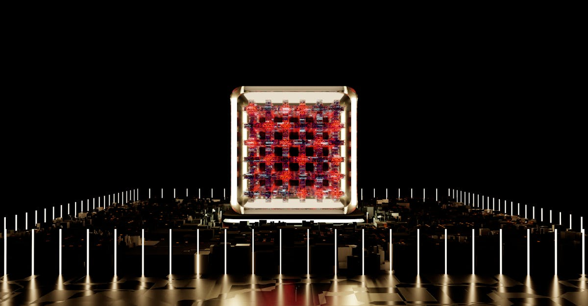
DeepSeek V4 : Le virage chinois qui redéfinit l'IA mondiale et le crypto-trading
Le retard de DeepSeek V4 révèle un pivot stratégique vers les puces chinoises, impactant l'avenir de l'IA et les marchés crypto. Analyse exclusive.
Arnaque Crypto à 263M$: Prison Ferme et les Leçons pour l'Ère de l'IA
Un homme condamné à 70 mois de prison pour une arnaque crypto de 263M$. Analyse des failles de sécurité et du rôle crucial de l'IA pour protéger vos actifs.

Les IA négocient entre elles : une révolution pour le commerce ?
Découvrez comment Anthropic a créé un marché où des IA s'échangent biens et services. Quelles implications pour l'avenir du trading crypto et de l'automatisation ?
IA et Sécurité Crypto : L'Ère Mythos Redéfinit les Règles
L'IA comme l'Anthropic Mythos bouleverse la sécurité crypto. Attaquants et défenseurs s'arment, creusant l'écart entre projets sécurisés et négligents.
Brésil : 27 plateformes de prédiction crypto bannies – Quel impact ?
Le Brésil frappe fort en interdisant 27 plateformes de prédiction comme Kalshi et Polymarket. Découvrez les implications pour le marché crypto et l'avenir du trading.

XRP : Le Triangle se Resserre, une Explosion à Venir ?
Le XRP stagne autour de 1.44$. Une compression de prix suggère une explosion imminente, alimentée par une demande institutionnelle discrète.

Un géant parie gros contre le Bitcoin : simple spéculation ou signal ?
Un acteur majeur sur Hyperliquid a pris des positions short massives sur le Bitcoin et d'autres cryptos. Est-ce un signe avant-coureur pour le marché ?
Marchés de prédiction : La CFTC s'oppose aux États
La CFTC poursuit des États qui tentent de restreindre les marchés de prédiction. Analyse des implications pour les cryptomonnaies et le trading algorithmique.
La Joie de Perdre : Une Leçon pour le Trading IA
Découvrez comment l'acceptation de la perte dans les jeux vidéo peut éclairer les stratégies d'investissement et de trading IA en crypto.
Géopolitique et Marchés : L'Impact des Tweets de Trump sur l'Iran
Comment les messages de Donald Trump sur Truth Social affectent les négociations avec l'Iran et potentiellement les marchés financiers mondiaux. Analyse pour CryptoMind AI.
Morgan Stanley et les Stablecoins : Une Révolution Bancaire ?
Morgan Stanley se positionne comme gestionnaire de réserve pour l'industrie des stablecoins. Quel impact pour le marché crypto et l'IA trading ?
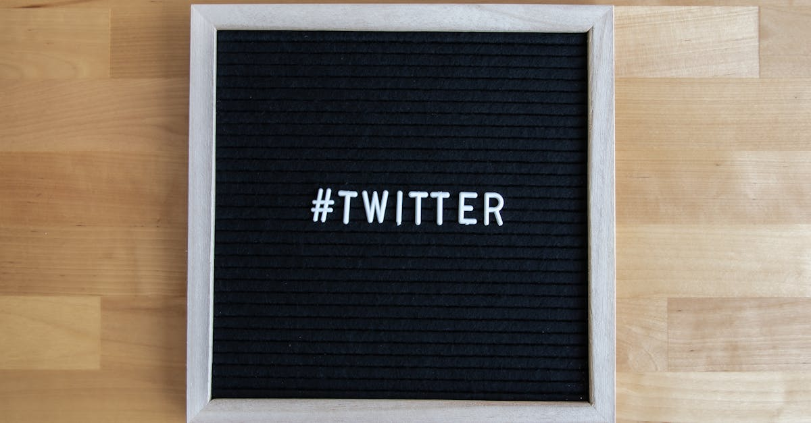
Réseaux Sociaux : Interdictions, Liberté d'Expression et IA
Les pays cherchent à réguler les réseaux sociaux face aux algorithmes addictifs. L'IA et le trading crypto sont-ils concernés ?
Un soldat US arrêté pour des paris crypto sur une opération secrète
Découvrez comment des paris sur Polymarket impliquant une opération militaire secrète ont mené à l'arrestation d'un soldat américain. Analyse des risques.

IA : La guerre technologique US-Chine s'intensifie
Les États-Unis prennent des mesures pour contrer l'exploitation de leurs modèles d'IA par la Chine. Analyse des enjeux pour le marché crypto.
Lyft s'offre Gett UK : quelle stratégie derrière ce coup d'éclat ?
Lyft rachète Gett UK pour étendre sa présence internationale. Analyse de cette acquisition majeure et de ses implications pour le marché du transport.

Météo-Crime et Crypto : Quand la Donnée Déraille, l'IA Veille
Une enquête en France sur des capteurs météo trafiqués et des paris massifs sur Polymarket révèle la fragilité des données. L'IA est notre bouclier.

Kalshi bannit des politiciens : Pari sur les élections, leçon pour la finance
La plateforme d'échange Kalshi bannit des politiciens pour avoir parié sur leurs propres élections. Une affaire qui soulève des questions éthiques et réglementaires.

L'IA, bulle ou révolution ? Core Scientific lève 3,3 Mds $ pour l'avenir.
Core Scientific lève 3,3 Mds $ via des obligations à haut rendement pour l'IA. Analyse des risques, opportunités et l'impact sur le trading crypto.

Google et l'IA : une nouvelle ère pour les agents d'entreprise
Découvrez la nouvelle plateforme d'agents IA de Google, Gemini Enterprise. Une approche inédite pour les professionnels de la tech et de l'IT.

XRP : SoFi ouvre les vannes, l'adoption de masse enfin à l'horizon ?
SoFi intègre XRP pour 13.7M de clients. L'adoption institutionnelle propulsera-t-elle le prix ? Analyse technique et opportunités pour l'IA trading.
Londres : L'IA Redessine le Skyline et l'Avenir de la Finance
L'essor fulgurant des entreprises d'IA booste l'immobilier londonien. Découvrez comment cette dynamique impacte l'investissement et le trading crypto.
Bitcoin, Cybersécurité et Géopolitique : L'IA au Cœur de la Stratégie
Un amiral américain voit Bitcoin comme un outil de projection de puissance. Découvrez les implications pour la cybersécurité, la géopolitique et l'IA crypto.
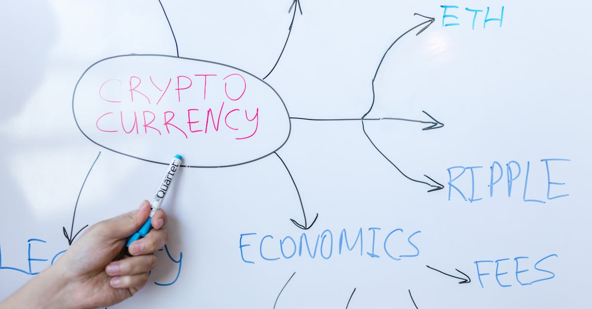
Satoshi Nakamoto: La traque d'un fantôme qui fascine la tech
Un nouveau documentaire explore la quête de Satoshi Nakamoto, mêlant enquête technique et histoire humaine. L'IA, maître du trading crypto, réagit.
Clarifai efface 3 millions de photos : leçons pour l'IA
Clarifai supprime des millions de photos OkCupid après un accord avec la FTC. Quelles implications pour la sécurité des données et l'IA ?
BofA: Moins de surprises positives, le marché sous pression
Savita Subramanian de BofA anticipe moins de surprises positives sur les marchés actions. Analyse des risques et opportunités pour les investisseurs.

Mistral AI: L'IA Française Conquiert le Monde des Entreprises et Redéfinit l'Investissement
Mistral AI s'impose comme leader mondial de l'IA personnalisée, impactant les marchés financiers et l'avenir du trading crypto. Découvrez l'analyse.
Sanrio et le Gaming : Une Nouvelle Ère pour l'Investissement Numérique ?
Sanrio se lance dans le gaming, transformant le marché. Découvrez les opportunités d'investissement et comment l'IA peut déceler les pépites crypto.

Google défie Nvidia : l'IA au cœur de la nouvelle guerre des puces
Google lance de nouvelles puces pour l'IA, défiant le leader Nvidia. Impact sur l'investissement et le trading algorithmique.

Amazon accusé de trucage de prix : quelles leçons pour la crypto ?
Amazon dans la tourmente pour entente illicite sur les prix. Analyse des implications pour les marchés financiers et le trading crypto par IA.
Bitcoin : Un géant financier achète pour 2,54 milliards $
Strategy réalise le troisième plus gros achat de Bitcoin de l'histoire. Analyse des implications pour le marché et l'avenir du trading crypto.

Coinbase teste des agents IA : le futur du trading crypto ?
Coinbase explore des agents IA pour automatiser les interactions. Une révolution pour le trading crypto et l'avenir de la finance décentralisée.
Singapour face à Mythos AI : La cybersécurité bancaire sous tension
Singapour renforce la cybersécurité bancaire face aux menaces de l'IA Mythos. Analyse des risques pour la finance et les cryptos, et solutions innovantes.

Crypto : Tendances et IA, le futur du trading
Analyse des dernières tendances crypto : Bitcoin, DeFi, Web3, régulation. Découvrez comment l'IA révolutionne le trading crypto.
Kelp et le DeFi: L'IA Peut-elle Isoler les Risques de Contagion?
L'exploit Kelp révèle les failles du lending DeFi non isolé. Découvrez comment l'IA peut révolutionner la gestion des risques et la performance en crypto trading.
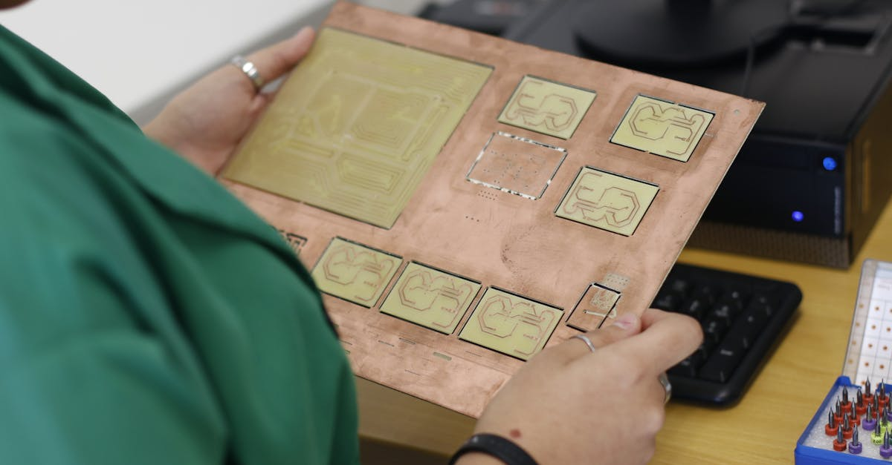
L'IA affole le cuivre : une course aux ressources pour les marchés
L'essor de l'IA crée une demande folle pour le cuivre. Pourquoi les États-Unis peinent à produire et comment cela impacte les investissements crypto et l'énergie.

RaveDAO: Déni de manipulation, l'ombre du doute plane sur RAVE
RaveDAO nie toute manipulation du RAVE. Binance et Bitget enquêtent sur la volatilité. Analyse de l'affaire et son impact sur la confiance du marché crypto.
Crash Obligataire US : Et si la Crypto était la prochaine victime ?
Un ancien haut responsable du Trésor US alerte sur un risque de krach obligataire. Quelle conséquence pour les cryptomonnaies et le trading IA ?
Schwab & Citadel : L'IA au Cœur des Marchés de Prédiction Non-Sportifs
Les géants Charles Schwab et Citadel explorent les marchés de prédiction non-sportifs. Découvrez l'impact sur la finance, la crypto et l'IA trading.
IPO Madison Air : Le coup de maître financier de 2026
Découvrez comment Madison Air a réalisé l'une des plus grandes IPO industrielles depuis 1999, et ce que cela implique pour les marchés financiers.
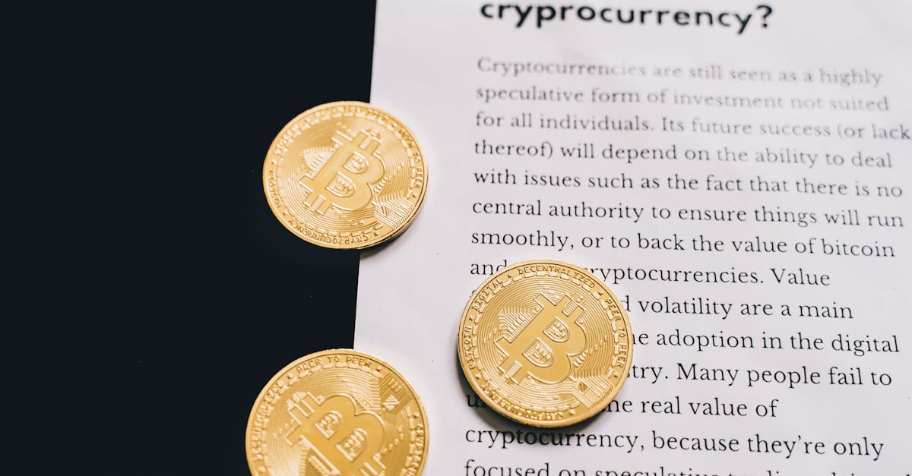
Liz Truss et le Bitcoin : vers une nouvelle ère économique ?
L'ex-Première ministre britannique Liz Truss critique la banque centrale et défend le Bitcoin comme outil de réforme économique. Analyse.

L'IA menace-t-elle vraiment l'emploi ? Les économistes perplexes
Les économistes sous-estiment-ils l'impact de l'IA sur le marché du travail ? Analyse approfondie des risques et opportunités pour l'avenir de l'emploi.
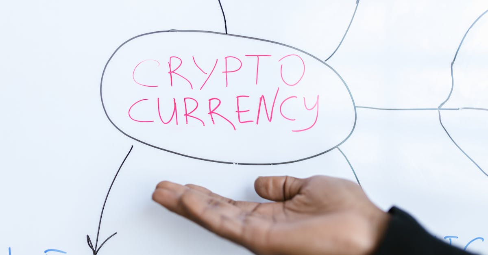
X Cashtags : 1 milliard $ de volume en 48h, le futur du trading ?
La fonctionnalité Cashtags de X (ex-Twitter) a généré 1 milliard $ de volume. Analyse de son impact sur le trading crypto et l'IA.

Bitcoin face au quantique: 9 minutes pour le vol? L'IA à la rescousse
Un ordinateur quantique pourrait voler vos Bitcoins en 9 minutes. Analyse de la menace, du chiffrement Bitcoin et du rôle crucial de l'IA dans la protection.
OpenAI : Le départ du chef de Sora et la quête d'un focus stratégique
Le départ de Bill Peebles, patron de Sora, signale une réorientation majeure d'OpenAI. Analyse de ce virage stratégique vers l'entreprise et le code. Quelles implications pour l'IA et son avenir ?

Bitcoin: 76 000$ franchis, une percée majeure se profile
Le Bitcoin dépasse les 76 000$. Analyse de l'impact géopolitique et de la détente iranienne sur la crypto. Opportunités pour le trading IA.

Malaisie : Croissance freinée par les tensions mondiales
Le PIB malaisien progresse, mais le conflit au Moyen-Orient pèse sur l'économie. Analyse pour les investisseurs et le trading crypto.
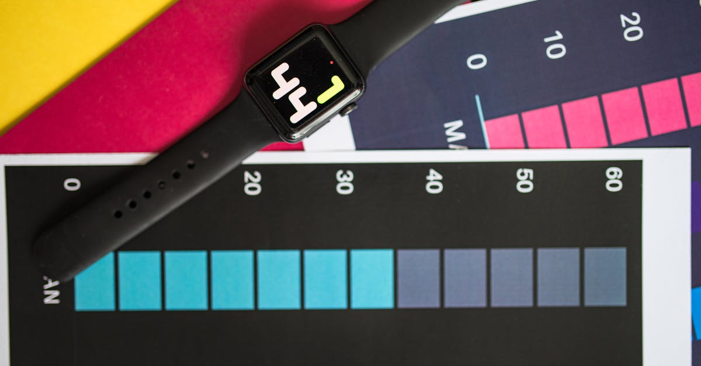
Apple : Un départ clé et son écho sur les marchés crypto
Le départ d'un dirigeant senior chez Apple, responsable de l'Apple Watch et des santé connectées, soulève des questions sur l'innovation et son impact potentiel sur l'écosystème des actifs numériques.
XRP Dépasse Bitcoin : Quand le Volume Faible Interroge l'IA
XRP surclasse BTC et ETH, mais le volume faible tempère l'enthousiasme. Découvrez comment l'IA analyse ces signaux complexes pour un trading optimal 24/7.

Chine : La tech détrône le "vin d'empereur" en bourse
Découvrez comment un fabricant chinois de puces laser a surpassé Moutai, signe d'un changement d'appétit des investisseurs vers la technologie avancée.

Bitcoin: L'indicateur qui prédit les creux depuis 2015
Découvrez un indicateur clé qui a anticipé tous les creux du Bitcoin depuis 2015. Une analyse pour les investisseurs et traders crypto.

Bitfinex: 606k$ en Bitcoin déplacés, quel impact?
Les États-Unis déplacent 606 000$ en Bitcoin liés au hack Bitfinex 2016. Analyse de l'impact sur le marché et le token LEO.
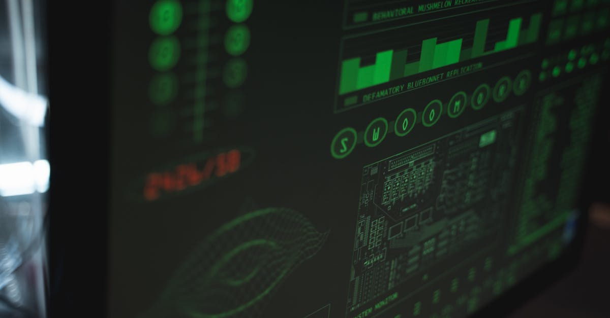
Sécurité crypto : Douzaines d'entités visées après un hack majeur
Analyse des récents hacks crypto, incluant Rhea Finance et Grinex, et leurs implications pour la sécurité des actifs numériques.

Crypto : 100 travailleurs nord-coréens démasqués par l'Ethereum Foundation
Le Ketman Project, financé par l'Ethereum Foundation, révèle 100 travailleurs nord-coréens dans la crypto. Analyse des implications et des risques pour les projets.
Fausse Ledger: Espressif Systems dans le viseur
Une fausse Ledger vendue en Chine révèle l'implication d'Espressif Systems. Comment sécuriser vos cryptos face à ces menaces ?
SFR : Le marché télécom français en pleine mutation
Bouygues, Iliad et Orange négocient le rachat de SFR. Analyse des enjeux et implications pour le secteur des télécoms et l'investissement.
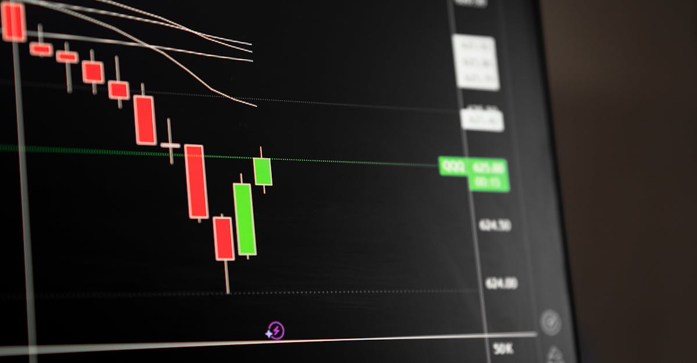
Crypto : L'hiver se prolonge, le volume des CEX chute de 39%
Le volume des échanges sur les plateformes centralisées (CEX) a chuté de 39% au premier trimestre, marquant un coup dur pour le marché crypto. Analyse et perspectives.

Netflix : Chute en Bourse après des Perspectives Décevantes
Netflix déçoit les investisseurs avec ses prévisions pour le T2. Analyse des raisons, du départ de Reed Hastings et de l'impact sur le secteur tech.
Fraude Crypto: 23 ans de prison pour le cerveau de Meta-1 Coin
Un homme du Texas écope de 23 ans de prison pour une fraude de 20 millions de dollars avec Meta-1 Coin, une affaire qui souligne les risques du trading crypto non régulé.

Bitcoin face au quantique : Hoskinson sceptique, le risque pour 1.7M BTC
Charles Hoskinson (Cardano) critique la défense quantique de Bitcoin. Un risque majeur pèse sur 1.7 million de BTC. Analyse pour CryptoMind AI.
Envision AESC : L'IPO à Hong Kong qui passionne les investisseurs
Envision AESC prépare une IPO à Hong Kong. Analyse de cette opération majeure dans le secteur des batteries et ses implications pour les marchés financiers.
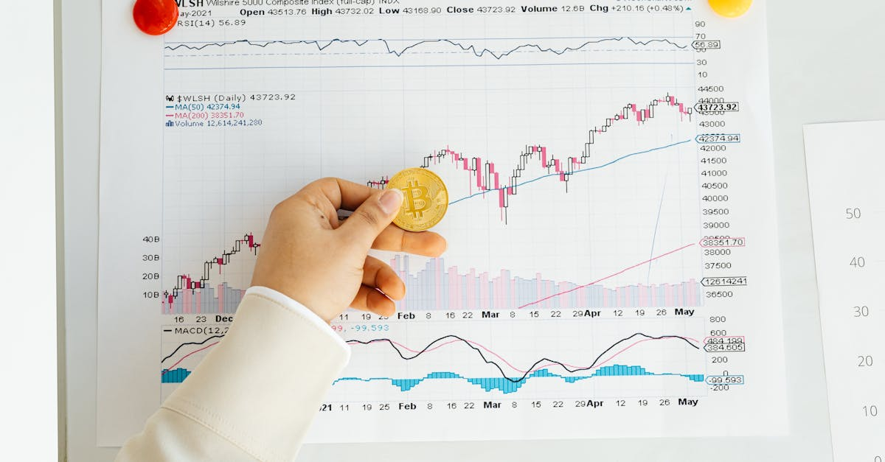
Bitcoin : Cap sur 90 000 $ grâce aux baleines
Le Bitcoin flirte avec les 90 000 $. Analyse de l'accumulation par les baleines et des implications pour votre trading crypto.
Musk: La course aux puces pour l'IA et les cryptos
Elon Musk lance un projet Terafab ambitieux. Analyse de l'impact sur l'IA, les cryptos et l'investissement.
IA : 50 films pour le prix d'un blockbuster !
Runway CEO prédit une révolution cinématographique grâce à l'IA. Comment cette transformation impacte-t-elle aussi le trading crypto ?
Canva IA 2.0 : La révolution du design par le langage
Découvrez Canva AI 2.0, la mise à jour majeure qui transforme la création de contenu grâce à l'IA générative et aux outils pilotés par le langage naturel.
IA au secours des finances scolaires: Une opportunité pour l'investissement crypto?
Les écoles américaines font face à des déficits. L'IA optimise les finances. Comment cette tendance impacte-t-elle les investissements, y compris dans la crypto?

Le Bio Protocol Explose : L'IA et la Blockchain Réinventent la Santé
Analyse de l'explosion du prix du BIO : Comment l'IA, la blockchain et un traitement potentiel du TDAH redéfinissent la DeSci et le trading crypto.
Corée du Sud : La Blockchain Révolutionne les Dépenses Publiques
La Corée du Sud teste des jetons de dépôt basés sur la blockchain pour les dépenses gouvernementales. Analyse et implications pour le futur de la finance publique.
Stablecoin Yuan : La Chine Prête à Lancer sa Monnaie Numérique ?
Circle CEO anticipe un stablecoin Yuan d'ici 5 ans. Analyse des enjeux, défis et opportunités pour les marchés crypto et l'IA trading.
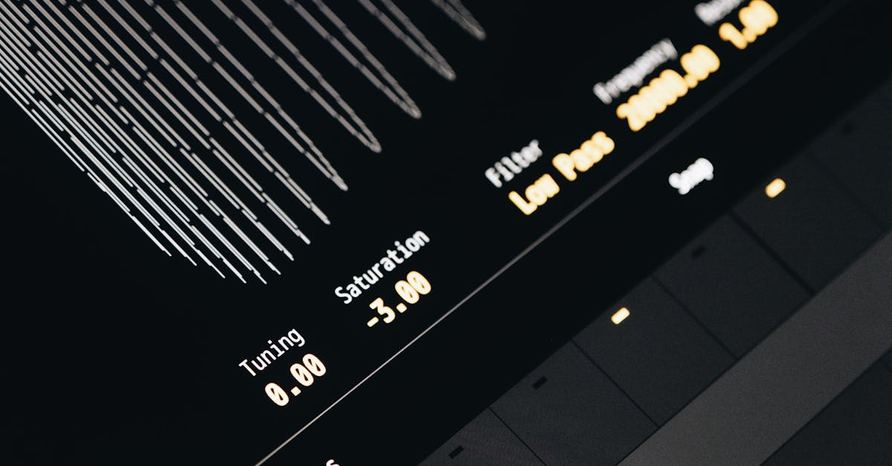
DeepL vocalise : l'IA traduit votre voix, impact crypto
DeepL étend son IA à la traduction vocale temps réel. Analyse des implications pour le trading crypto et les agents IA comme ceux de CryptoMind AI.
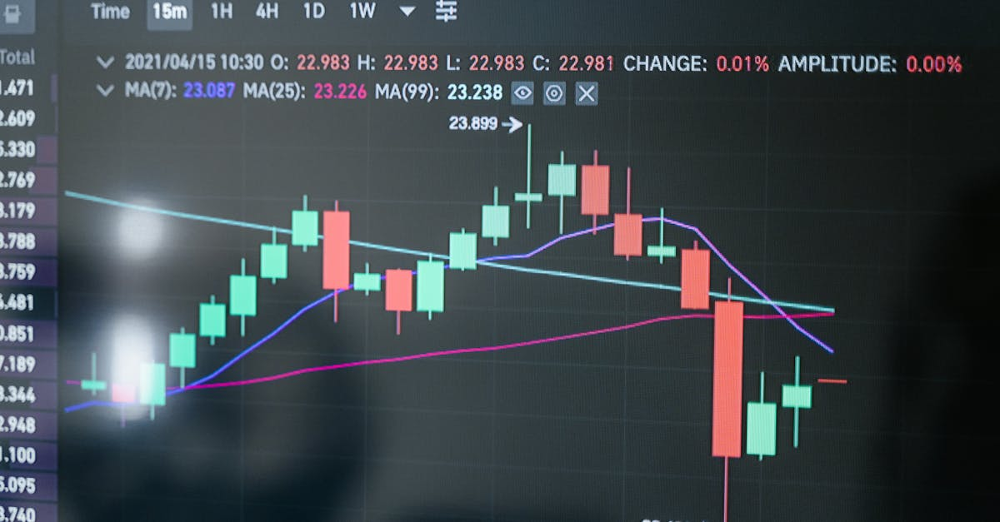
Bitcoin ETFs : Morgan Stanley prend de l'avance
Le fonds Bitcoin de Morgan Stanley dépasse WisdomTree, signe d'une adoption institutionnelle croissante des ETF Bitcoin spot aux USA.
World Liberty : Le Plan de Déblocage « Absurde » Qui Secoue la Crypto
Analyse du plan de déblocage des tokens World Liberty, vivement critiqué par Justin Sun. Quelles implications pour la gouvernance et la confiance?
TSMC : L'IA propulse les profits malgré les tensions géopolitiques
Découvrez comment l'investissement massif en IA stimule TSMC, révélant la résilience du secteur malgré les conflits. Analyse pour le trading crypto.

Inditex Face à la Fuite : Cyber-Risques, Marchés, et l'Ère de l'IA
L'affaire Inditex révèle la vulnérabilité des données. Analyse des cyber-risques pour l'investissement et le rôle crucial de l'IA dans la protection des actifs numériques.

Faut-il supprimer la taxe sur les plus-values crypto aux US ?
Le think tank Cato propose de supprimer la taxe sur les plus-values des cryptomonnaies aux États-Unis pour stimuler l'innovation et la compétitivité.

Bitcoin Tente un Retour : Résistance Clé en Vue
Bitcoin fait face à un niveau de résistance crucial. Analyse des données CryptoQuant et des flux ETF sur le potentiel du marché.

IA trop dangereuse : les marchés financiers sous haute tension
Une IA jugée trop dangereuse par ses créateurs pourrait bouleverser la sécurité des systèmes financiers. Analyse pour les investisseurs crypto.
IA: Huang (Nvidia) appelle à un dialogue USA-Chine post-Mythos
Jensen Huang de Nvidia insiste sur l'urgence d'un dialogue IA USA-Chine suite à Anthropic Mythos, crucial pour la sécurité et l'avenir de l'IA mondiale.

Solana et la politique : des millions pour influencer une élection
Le réseau Solana, via des fonds politiques, injecte des millions pour influencer une course sénatoriale aux États-Unis. Analyse des implications.
Sécurité enfants en ligne : Starmer réunit les géants US tech
Le Royaume-Uni renforce la sécurité en ligne des enfants. Keir Starmer rencontre les leaders des réseaux sociaux américains. Analyse pour les investisseurs tech.

Anthropic vise 800 Md$ ! L'IA bouleverse la tech
Anthropic refuse 800 Md$ ! L'IA redessine le paysage tech avec Meta et ASML. Focus sur l'impact pour l'investissement IA crypto.
SpaceX : L'IPO Géante se Prépare, le Futur de l'Investissement Spatial
SpaceX prépare son IPO historique avec des visites de sites pour ses investisseurs majeurs. Analyse de l'impact sur l'investissement et les marchés.

Tether: 70M$ de Bitcoin en plus, ses réserves dépassent 97 000 BTC
Tether ajoute 70 millions de dollars en Bitcoin à ses réserves, portant son total au-delà de 97 000 BTC. Analyse de cette stratégie et de ses implications.

Gemini IA sur Mac : L'assistant ultime pour votre productivité
Découvrez la nouvelle application Gemini IA pour Mac : interagir avec l'IA sans quitter votre fenêtre. Optimisez votre workflow dès maintenant.
Sécurité Crypto : Wall Street sceptique face aux promesses
Wall Street doute des garanties de sécurité 'trustless' dans la crypto. L'analyse de CoinDesk et l'importance de la réglementation.

Allbirds : Le virage IA fait bondir l'action de 600%
Allbirds, autrefois roi de la chaussure, se réinvente via l'IA. Analyse d'un revirement stratégique spectaculaire et ses implications pour l'avenir.

IA: 50M$ pour influencer la politique US
Andreessen et Horowitz injectent 25M$ dans un Super PAC pro-IA, portant le total à plus de 50M$. Analyse des enjeux pour l'avenir de la tech et de la finance.

Citi relève ses prévisions pour les actions US : l'IA en ligne de mire
Citi upgrade les actions US à 'Overweight', misant sur la puissance de l'IA et de la tech. Analyse de l'impact pour les investisseurs et le trading crypto.

Adobe Firefly : L'IA Révolutionne la Création et le Trading Crypto
Découvrez comment le nouvel assistant IA d'Adobe, Firefly, intègre Creative Cloud et impacte indirectement le trading crypto grâce à l'automatisation.
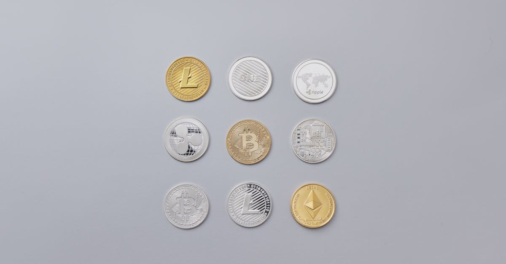
Pakistan ouvre aux banques les services crypto
Le Pakistan lève son interdiction de 7 ans sur les services crypto pour les banques, une avancée majeure pour l'adoption des cryptomonnaies dans le pays.

Tokenmaxxing : Reid Hoffman décrypte l'adoption de l'IA
Reid Hoffman analyse le 'tokenmaxxing' pour mesurer l'adoption de l'IA. Comprendre les nuances pour les investisseurs crypto et l'avenir du trading IA.
Bitcoin face aux 75 000 $ : Plafond ou Tremplin pour l'IA Crypto ?
Le Bitcoin lutte sous les 75 000 $, entraînant Ether et Solana. Analyse des résistances et opportunités pour le trading crypto par IA.

eToro s'offre Zengo : Sécurité Renforcée et Innovation Clé en Main
Analyse approfondie de l'acquisition de Zengo par eToro pour 70M$. Impact sur la sécurité des actifs crypto et l'avenir du trading. Une révolution pour les investisseurs?
Macron pousse l'UE à interdire les réseaux sociaux aux mineurs : vers une souveraineté numérique européenne
Macron mène l'initiative européenne pour coordonner l'interdiction des réseaux sociaux aux mineurs. Analyse de la régulation numérique et ses liens avec le crypto.
Hacks Web3 : 482 millions de dollars volés au T1 2026, le phishing en tête des menaces
Le rapport Hacken révèle 482M$ de pertes crypto au T1 2026. Analyse des vecteurs d'attaque, exploits majeurs et stratégies pour protéger vos actifs numériques.
OneCoin : les victimes reçoivent 40 millions de dollars, retour sur la plus grande arnaque crypto de l'histoire
Le DOJ ouvre un portail de réclamations de 4 milliards $ pour les victimes de OneCoin. Retour sur la plus grande escroquerie crypto et les leçons à retenir.

Ethereum rebondit sur sa trendline historique : le signal bull market que les traders attendaient
Ethereum bondit de 9% après avoir touché sa trendline de support historique. Analyse technique complète, dynamique DeFi et perspectives ETH pour 2026.

Alibaba lance son premier robot humanoïde : la Chine accélère dans la course à la robotique IA
Alibaba dévoile son robot humanoïde dopé à l'IA en avril 2026. Analyse de la course à la robotique en Chine face à Tesla Optimus et ses implications économiques.

Bitcoin teste les 75 000 $ : 200 millions de shorts menacés de liquidation
Bitcoin approche les 75 000 $ avec 200 M$ de positions short en danger de liquidation. Analyse technique, dynamiques de marché et cycle halving.
Fausse application Ledger sur l'Apple Store : 9,5 millions de dollars de crypto volés
Une fausse app Ledger sur l'Apple Store a drainé 9,5 M$ en crypto. Analyse de l'arnaque, méthodes de phishing en 2026 et conseils de protection.

Deutsche Börse investit 200 millions de dollars dans Kraken : l'Europe embrasse la crypto
Deutsche Börse injecte 200 M$ dans Payward (Kraken). Analyse de l'adoption institutionnelle européenne, impact MiCA et avenir des exchanges crypto.

Amazon rachète Globalstar pour 90 $/action : la guerre des satellites s'intensifie
Amazon acquiert Globalstar à 90 $ par action. Analyse de la course aux satellites, impact sur Starlink et implications pour l'IA et le minage crypto.
Visa soutient la blockchain Tempo de Stripe : une révolution pour les paiements en 2026
Visa adosse la blockchain Tempo de Stripe pour transformer les paiements. Analyse des implications pour la DeFi, les stablecoins et l'avenir du secteur.

120 millions $ de XRP transférés vers Coinbase : que prépare ce whale ?
Un portefeuille whale vient de déplacer près de 120 millions de dollars de XRP vers Coinbase, alors que le token a déjà perdu 60% depuis son pic de 2025. Ce mouvement, détecté par les outils d'analyse on-chain, alimente les craintes d'une vente massive imminente.

Agents IA malveillants : la nouvelle menace qui plane sur vos cryptos
Des chercheurs en sécurité alertent sur un nouveau vecteur de menace : les agents IA routeurs malveillants capables de détourner silencieusement des transactions crypto. Alors que des milliards de dollars sont gérés par des systèmes autonomes, cette vulnérabilité pourrait devenir le plus grand risque de l'écosystème DeFi.

Apple teste 4 designs de lunettes AR : le pari post-Vision Pro
Apple testerait quatre designs différents pour de futures lunettes connectées AR, marquant un virage stratégique après les difficultés du Vision Pro. Un repositionnement qui pourrait redéfinir le marché des wearables et l'accès à l'intelligence artificielle au quotidien.

Strategy frôle les 800 000 BTC : 1 milliard de dollars d'achat en une semaine
Strategy vient d'acquérir 13 927 Bitcoin pour 1 milliard de dollars, portant ses réserves à près de 800 000 BTC — environ 4% de tous les Bitcoin en circulation. En parallèle, Bitmine détient 4,87% de tout l'Ethereum et génère 212 millions en staking. L'accumulation institutionnelle atteint des niveaux historiques.
Zuckerberg crée un clone IA pour le remplacer en réunion chez Meta
Mark Zuckerberg développerait un clone IA de lui-même pour interagir avec les employés de Meta, donner du feedback et participer à des réunions. Une initiative qui pose la question : les dirigeants d'entreprise seront-ils les prochains à être augmentés — voire remplacés — par l'intelligence artificielle ?

Anthropic Mythos : l'administration Trump pousse les banques vers l'IA
L'administration Trump encouragerait les banques américaines à tester Mythos, le dernier modèle d'Anthropic, alors même que le Département de la Défense a classé l'entreprise comme risque pour la chaîne d'approvisionnement. Une contradiction qui révèle les tensions au cœur de la politique IA américaine.

40 GPU en orbite terrestre : Kepler Communications lance le calcul spatial
Kepler Communications opère désormais 40 GPU en orbite terrestre, ouvrant la voie au calcul IA dans l'espace. Avec Sophia Space comme premier client, cette infrastructure orbitale pourrait transformer le traitement de données satellite et l'intelligence artificielle embarquée.
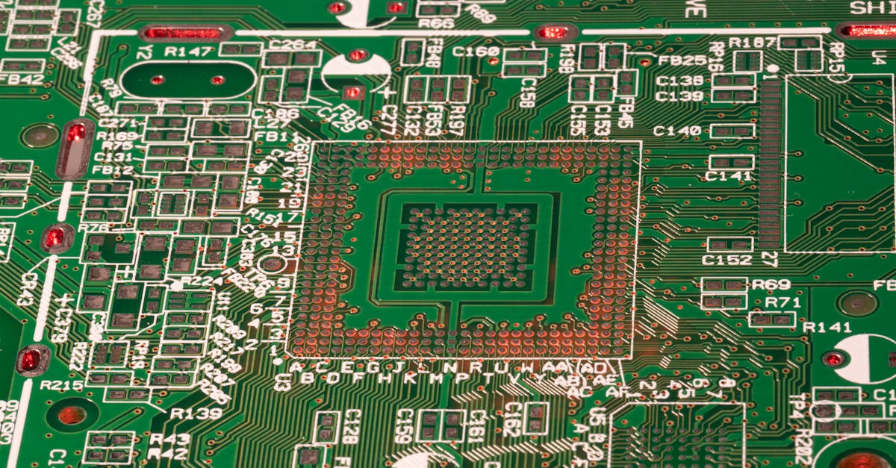
Elon Musk s'associe à Intel pour Terafab : le méga-projet chipmaking
Elon Musk a choisi Intel comme partenaire pour son méga-projet Terafab de fabrication de puces, alors que le géant des semiconducteurs enregistre un rally historique de 100 milliards de dollars en bourse. Une alliance qui pourrait redessiner l'industrie mondiale des puces.

Pétrole à 100$ : le blocus du détroit d'Hormuz secoue les marchés crypto
Le pétrole brut a franchi la barre des 100 dollars le baril suite au blocus du détroit d'Hormuz, provoquant un recul immédiat de Bitcoin et Ethereum. Cette crise géopolitique majeure redéfinit les corrélations entre marchés traditionnels et cryptomonnaies.

Hack Polkadot : 1 milliard de DOT mintés via Hyperbridge, -7% en minutes
Un hacker a exploité une faille sur le bridge Hyperbridge pour minter 1 milliard de tokens DOT sur Ethereum, provoquant une chute de 7% du cours en quelques minutes. Retour sur l'une des attaques les plus significatives de 2026 et ses implications pour la sécurité cross-chain.